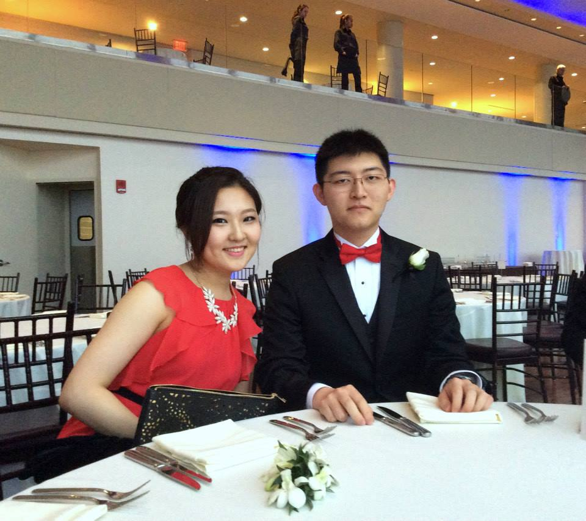

Hello, my name is Lingfeng, but I go by Frank. I am a first-year Electrical Engineering major at Georgia Tech. I am originally from Shenzhen, China, but I have since then lived in Japan, Boston, and Los Angeles. Outside of travel, I love to follow astrophysics, and of course, play video games. Over the past four years, I interned at IBM and CSAIL MIT in addition to enduring high school. I was fortunate to be blessed with the company of extraordinary people whom I gained my invaluable "on-the-job" experiences from. Without boring you to death, I now would like to acknowledge the internet's usefulness in allowing interested parties to connect and troll. I am going straight to the point... If you are PC Master Race, add me on steam, if you are femme-fatale, add me on e-Harmony, and if you are Elon Musk, hire me, and if you are unsure, do all three! Adventure awaits!
| Link to my steam page: Deathernater |
| A Worthwhile Space Sim: |
| Email Me |
| Mail Form Page |